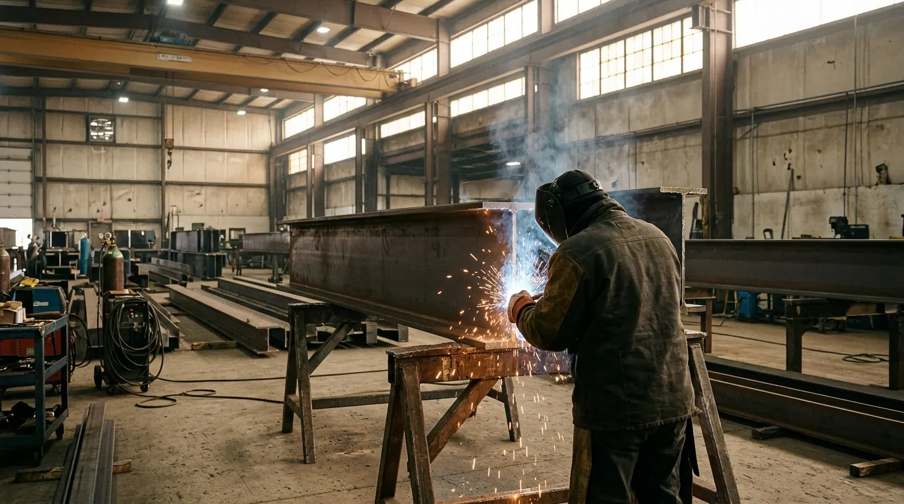
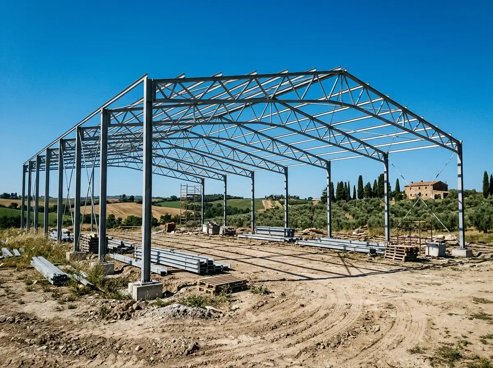
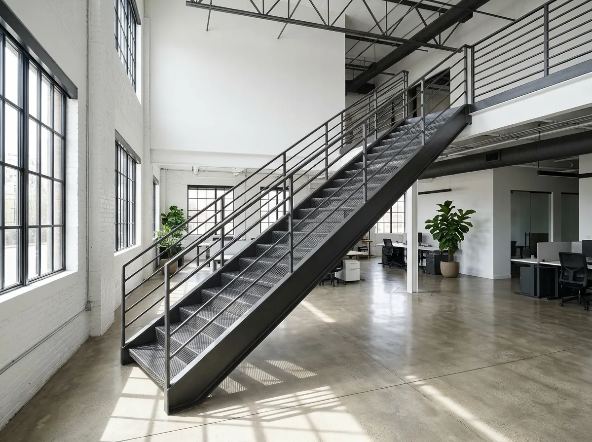
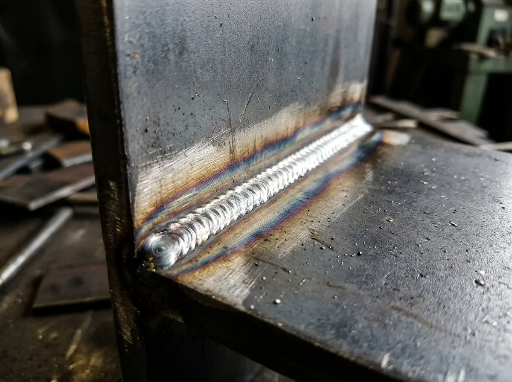

Carpenteria metallica · Foligno, Umbria
Acciaio tagliato, saldato e montato da noi.
Capannoni, soppalchi, scale, parapetti e rinforzi per l'edilizia. Disegniamo in officina, costruiamo in officina, montiamo con la nostra squadra.

Cosa costruiamo
| Strutture | Capannoni agricoli e artigianali, tettoie, pensiline, coperture fotovoltaiche. |
|---|---|
| Soppalchi | Piani in più dentro capannoni e negozi, con grigliato o lamiera grecata e getto. |
| Scale e parapetti | Scale dritte, a chiocciola, di sicurezza esterne. Ringhiere a disegno. |
| Cancelli e recinzioni | Scorrevoli e a battente, predisposti per l'automazione. |
| Rinforzi per l'edilizia | Cerchiature di aperture nei muri portanti, travi di sostegno, rinforzi di solai. |
Per capire il preventivo
Quale profilo per il tuo lavoro
Nei preventivi di carpenteria trovi sigle come IPE o HEA. Tocca un profilo per vedere la sezione e a cosa serve.
Trave IPE
Travi di solai, soppalchi e coperture. Lavora bene in una direzione: per le luci lunghe.
Lavori
Esempi di lavori tipici. Foto generate con l'IA per la demo.



Dal rilievo al montaggio
Sei passaggi, tutti dentro casa nostra.
- Rilievo
Misuriamo in cantiere con il laser: quote, piombi, punti di appoggio.
- Disegno costruttivo
Tavole di officina pezzo per pezzo, approvate dal tuo ingegnere prima del taglio.
- Taglio e foratura
Segatrice a nastro e trapano a colonna in officina: le giunzioni arrivano pronte.
- Saldatura
Saldature a filo con controllo visivo e, dove serve, prove non distruttive.
- Protezione
Zincatura a caldo per l'esterno, oppure fondo e verniciatura nel colore scelto.
- Montaggio
Squadra nostra con autogrù o sollevatore. Bulloni serrati con chiave dinamometrica.
Chi siamo
Officina di 800 m² nella zona industriale di Foligno, cinque persone tra saldatori e montatori. [Nome del titolare] disegna i pezzi in ufficio e il giorno del montaggio è in cantiere con la squadra.
Zona
Montiamo in tutta l'Umbria e nelle province vicine: Foligno, Spoleto, Perugia, Assisi, Todi, Terni, Macerata. Per i lavori grandi andiamo anche più lontano.
Spazio per certificazioni vere: certificazione di produzione per strutture in acciaio (EN 1090), saldatori qualificati, dichiarazione di prestazione per ogni struttura consegnata.
Domande
Serve il progetto di un ingegnere?
Per strutture, soppalchi e rinforzi sì: serve il calcolo firmato e spesso il deposito al genio civile. Se non hai un tecnico ti mettiamo in contatto con quelli con cui lavoriamo.
Meglio zincato o verniciato?
All'esterno la zincatura a caldo dura di più e chiede meno manutenzione. Dentro, o dove conta il colore, si vernicia. Si possono fare entrambe.
Quanto tempo ci vuole?
Dipende da disegno, materiale e zincatura. Nel preventivo trovi le settimane di officina e i giorni di montaggio, separati.
Fate anche piccoli lavori?
Sì: una ringhiera, una trave per allargare una porta, una mensola per un macchinario. Mandaci una foto con le misure.
Mandaci il lavoro
Misure, foto o progetto: con questi dati ti diamo una prima cifra e fissiamo il rilievo.
- Telefono
- Numero di esempio
- Indirizzo di esempio
- Officina
- Zona industriale di esempio, Foligno (PG)
- Orari
- Lun-ven 7:30-12 e 13:30-17:30 (esempio)